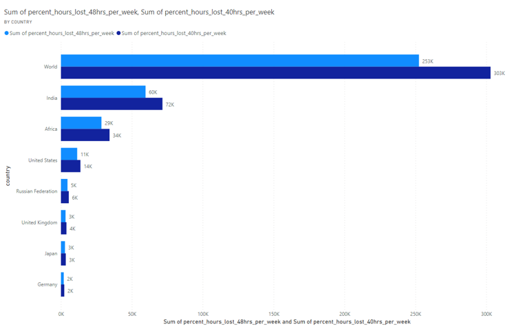
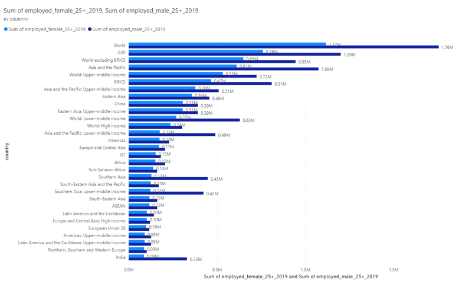
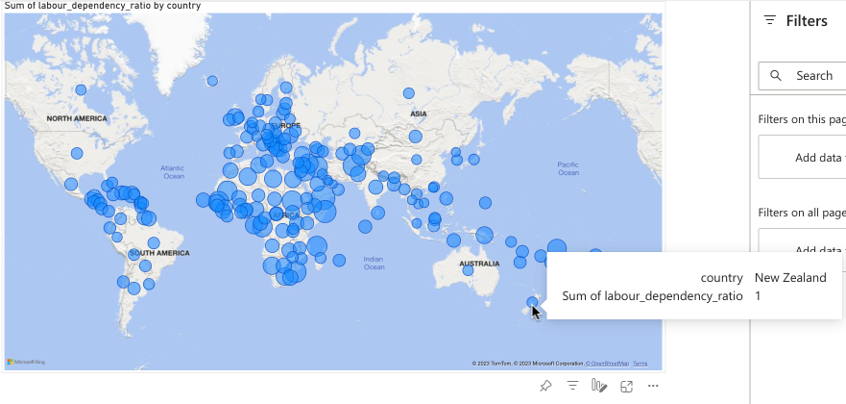
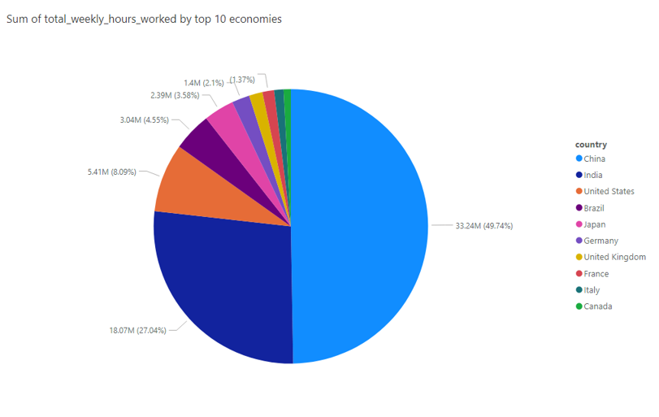
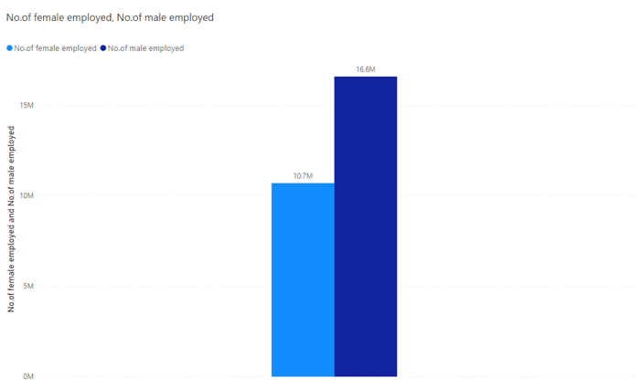
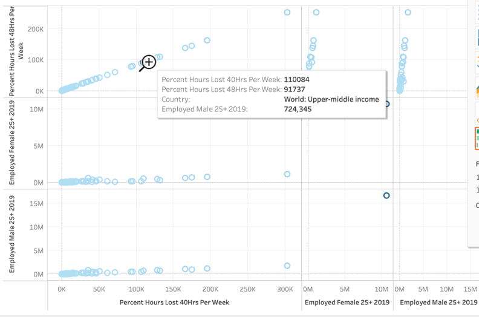
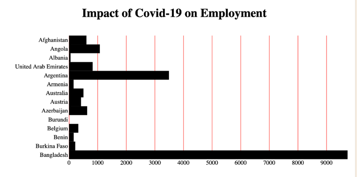
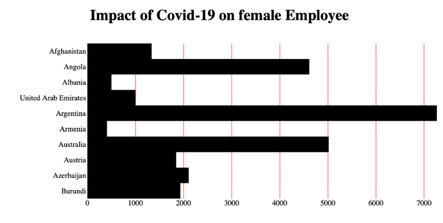
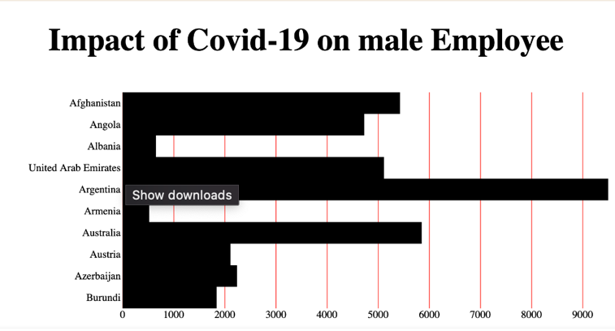
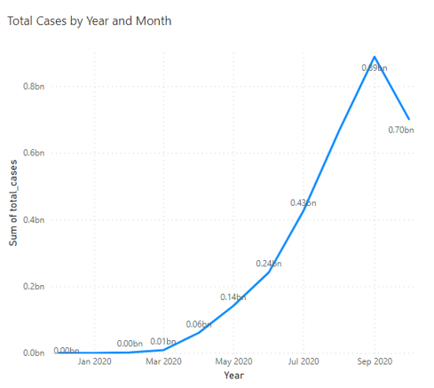

Impact of Covid on Economy

VIZUALIZATION TOOL USED: PowerBI
- This clustered bar chart shows, hours lost for 48 hrs and 40 hrs work schedules, worldwide 40hrs schedules employees were affected most.
- India has higher lost hours while Germany is lower.
Type of Idiom: Clustered Bar Chart
Impact of Covid on Economy

VIZUALIZATION TOOL USED: PowerBI
- This visualization shows bias in male-to-female employment aged above 25 years. Worldwide female employees have a higher drop in work hours.
- The higher drop of female employee work hours has been observed in every country and different regions.
Type of Idiom: Clustered Bar Chart
Impact of Covid on Economy

VIZUALIZATION TOOL USED: PowerBI
- This map represents labor dependency ratio which indicates that there is a sufficient number of people in the workforce that can support the dependent population. From the graph, we can pictorially observe that African regions have higher ratios (based on area of bubble).
- It is lower in the European region. It says the youth count in these particular regions is lower
Type of Idiom: Map
Impact of Covid on Economy

VIZUALIZATION TOOL USED: PowerBI
- This chart tells us the total work hours contributed by each country. We can clearly observe that China and India have higher weekly hours delivered by their employees.
- This is because both China and India have higher populations and this is directly proportional to higher delivered work hours, if they are significantly employed.
Type of Idiom: Pie Chart
Impact of Covid on Economy

VIZUALIZATION TOOL USED: PowerBI
- This is the sample count of female to male employment counts.
- There is clear bias in the employment opportunity for both genders.
Type of Idiom: Clustered Bar Chart
Impact of Covid on Economy

VIZUALIZATION TOOL USED: Tableau
- These spreadsheet plots with various attributes, for example 40hours_lost and 48hours_lost were highly proportional initially and diverged at the end. This tells that initially employees with 40 hours and 48 hours work schedules were equally affected but over the time 40 hours employees had more loss.
- Second example, 40hours_lost to female_employees, unlike above observation 40 hour female employment lost in a very slow manner. For the first 1M employees los 50K work hours.
Type of Idiom: Sheet scattered plot
Impact of Covid on Economy

VIZUALIZATION TOOL USED: VizHub
- This graph shows the total employment loss for a random sample of given countries. Majorly Bangladesh and Argentina lost higher employment.
Type of Idiom: Bar Chart
Impact of Covid on Economy

VIZUALIZATION TOOL USED: VizHub
- This plot shows loss of female employment on a random sample of given countries. It can be observed that Argentina, Australia and Angola have a higher impact on the loss of female employment.
Type of Idiom: Bar Chart
Impact of Covid on Economy

VIZUALIZATION TOOL USED: VizHub
- This plot shows loss of male employment on a random sample of given countries. It can be observed Argentina, Australia and Afghanistan have a higher impact on the loss of male employment.
Type of Idiom: Bar Chart
Impact of Covid on Economy

VIZUALIZATION TOOL USED: VizHub
- This distribution shows the percentage of work hours lost on total weekly hours. In this plot around 8 percentile of the workforce lost around 160K work hours during COVID-19 (2019-2020)
Type of Idiom: scattered plot